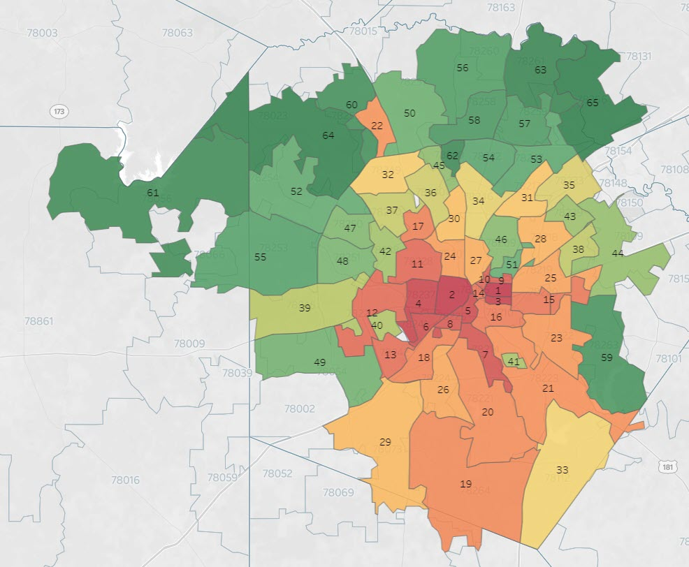
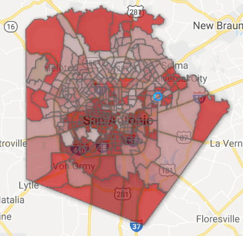
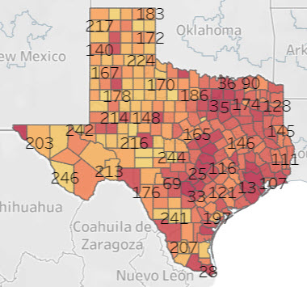
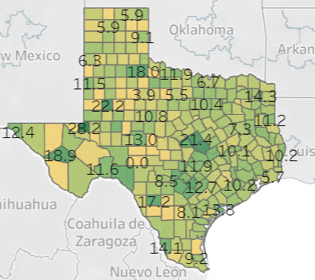

Tableau Public
More than 100 data visualizations published on Tableau Public, covering population characteristics, poverty, equity, domestic violence, eviction, migration, veterans, and more — primarily focused on San Antonio and Bexar County, with national work as well.
"San Antonio Population Characteristics by ZIP Code" was selected by Tableau Public's editors as their featured visualization — a peer recognition in the data visualization community.
Hardship Index Mapping
Using Census data to map community hardship across San Antonio ZIP codes and Bexar County census tracts — making inequality visible and geographically legible for policymakers and the public.

Hardship index, San Antonio by ZIP code

Hardship index, Bexar County
Women Veterans & Homelessness — National Data
County-level analysis of women veterans at risk for homelessness across Texas, built from U.S. Census data as part of the IWMF-funded reporting project and ongoing IRB-approved research.

Women veterans at risk for homelessness, Texas by county

Women veterans in Texas, percentage by county
Domestic Violence Survey — Geographic Distribution
Visualization of survey respondents by ZIP code from the 2021 community-wide domestic violence survey, showing geographic reach across Bexar County.

Survey respondents by ZIP code — 2021 Community-Wide Domestic Violence Survey, San Antonio Metropolitan Health District
Data
Data
Demographic analysis, data visualization, and mapping — translating complex population data into forms that inform policy and reach general audiences. Over 100 published visualizations on Tableau Public, spanning poverty, equity, veterans, domestic violence, and community demographics.
Tableau Public
More than 100 data visualizations published on Tableau Public, covering population characteristics, poverty, equity, domestic violence, eviction, migration, veterans, and more — primarily focused on San Antonio and Bexar County, with national work as well.
"San Antonio Population Characteristics by ZIP Code" was selected by Tableau Public's editors as their featured visualization — a peer recognition in the data visualization community.
Hardship Index Mapping
Using Census data to map community hardship across San Antonio ZIP codes and Bexar County census tracts — making inequality visible and geographically legible for policymakers and the public.
Hardship index, San Antonio by ZIP code
Hardship index, Bexar County
Women Veterans & Homelessness — National Data
County-level analysis of women veterans at risk for homelessness across Texas, built from U.S. Census data as part of the IWMF-funded reporting project and ongoing IRB-approved research.
Women veterans at risk for homelessness, Texas by county
Women veterans in Texas, percentage by county
Domestic Violence Survey — Geographic Distribution
Visualization of survey respondents by ZIP code from the 2021 community-wide domestic violence survey, showing geographic reach across Bexar County.
Survey respondents by ZIP code — 2021 Community-Wide Domestic Violence Survey, San Antonio Metropolitan Health District
The Status of Women in San Antonio
A City-commissioned report covering health, economic opportunities, political participation, and violence and safety for women in San Antonio. The violence and safety data — showing the city had the highest rape rate of major Texas cities and that femicide had tripled — drew significant public attention and civic response.

Report cover

Violence and safety findings
Community Needs Assessment — Data Made Accessible
The 2018 Community Needs Assessment produced a 300+ page report — then translated into Tableau visualizations, a partner excerpt, and online resources to reach multiple audiences beyond the report itself.

2018 CNA results made available in multiple formats online, including Tableau visualizations
McKinney-Vento Program Evaluation — SAISD
As Research Analyst and then sole Program Evaluator at San Antonio Independent School District — a district of approximately 50,000 students — supported and then led evaluation of the federally-funded McKinney-Vento program for students experiencing homelessness. Under a data-driven approach, the program achieved its best performance in decades.
Built a comprehensive program evaluation with extensive data visualizations — tracking student outcomes, mobility patterns, service utilization, and program effectiveness across the district.
COVID-19 ZIP Code Mapping — San Antonio
In the early months of the COVID-19 pandemic, before local government had developed its own public-facing data tools, produced nightly maps of COVID-19 spread across San Antonio ZIP codes — with plain-language commentary shared on Facebook. For months, this was the primary source many residents turned to for geographic context on where the virus was hitting and how it was moving through the community.
The maps also challenged unexamined assumptions about wealth, poverty, and vulnerability — showing data where speculation had been filling the gap.
UP Partnership · December 2019
"Mapping as a Tool"
NASW Alamo Branch · October 2019
"Mapping as a Tool"
YWCA San Antonio · September 2019
"Thinking about Data"
UTSA · Guest Lectures
"Introduction to Population Data"
Harlandale ISD · November 2017
Population Characteristics of Harlandale ISD ZIP Codes